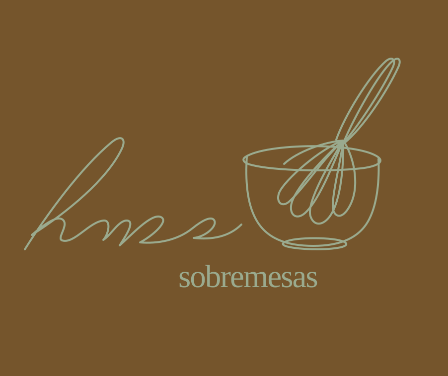

SOBREMESAS FEITAS COM CARINHO
Um carinho doce em cada detalhe.
Encomendas preparadas para tornar seus momentos ainda mais especiais.
Ver produtos
ESPAÇO PARA IMAGEM
PEDIDO SIMPLES
Monte seu pedido

- Escolha seus produtos
- Confira seu Carrinho
- Finalize pelo WhatsApp
ESCOLHA A SUA SOBREMESA